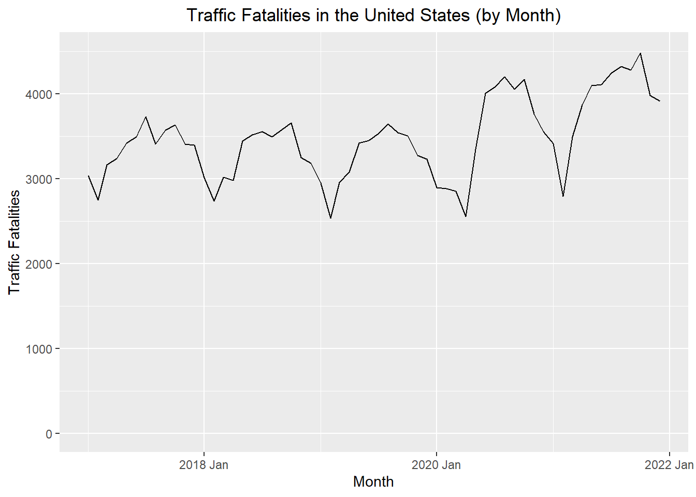
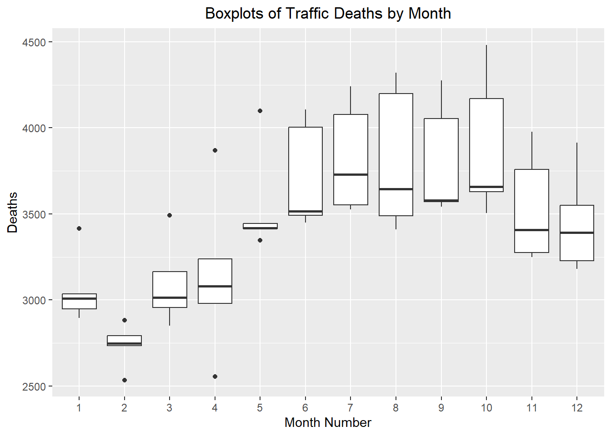
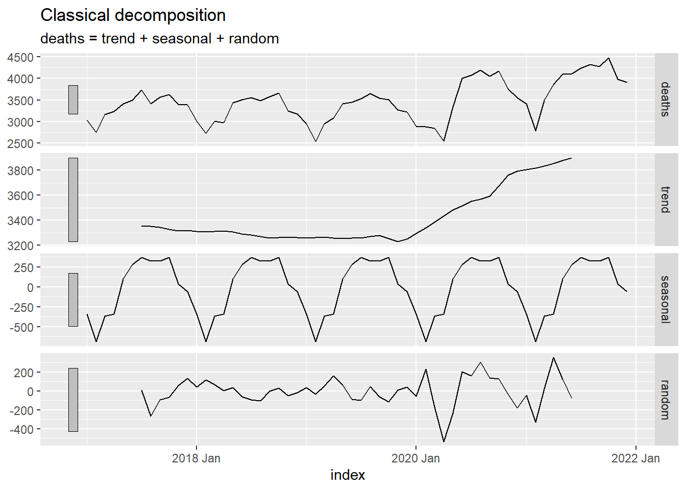
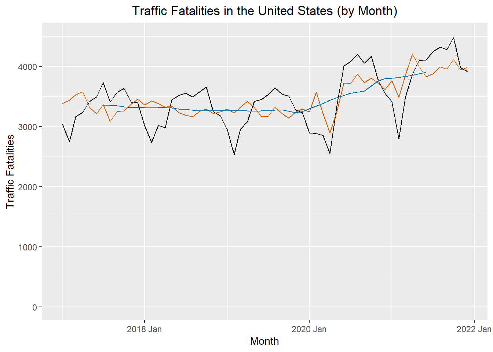

deaths_df <- rio::import("https://byuistats.github.io/timeseries/data/traffic_deaths.xlsx")
# Method 1: Create date from scratch based on pattern of rows
# This only works if the data are in ascending order with no missing values
# Note: This file is not in the right order, so this code gives the wrong tsibble
# unless you sort the Excel file before proceeding.
start_date <- lubridate::ymd("2017-01-01")
date_seq <- seq(start_date,
start_date + months(nrow(deaths_df)-1),
by = "1 months")
deaths_tibble <- tibble(
dates = date_seq,
year = lubridate::year(date_seq),
month = lubridate::month(date_seq),
value = pull(deaths_df, Deaths)
)
# Method 2: Build using the date information in the Excel file
deaths_tibble <- deaths_df |>
mutate(
date_str = paste("1", Month, Year),
dates = dmy(date_str),
year = lubridate::year(dates),
month = lubridate::month(dates),
value = Deaths
) |>
dplyr::select(dates, year, month, value) |>
tibble()
# Create the index variable and convert to a tsibble
deaths_ts <- deaths_tibble |>
mutate(index = tsibble::yearmonth(dates)) |>
as_tsibble(index = index) |>
dplyr::select(index, dates, year, month, value) |>
rename(deaths = value) # rename value to emphasize data contextAdditive Models
Chapter 1: Lesson 4
Learning Outcomes
Use R to describe key features of time series data
- Import CSV data and convert to tsibble format
Decompose time series into trends, seasonal variation, and residuals
- Implement additive decomposition
- Explain how to remove seasonal variation using an estimate for seasonal component of a time series
- Compute the estimators of seasonal variation for an additive model
- Calculate the random component for an additive model
- Compute a seasonally-adjusted time series based on an additive model
Preparation
- Read Sections 1.5.4-1.5.5 and 1.6
Learning Journal Exchange (10 min)
- Review another student’s journal
- What would you add to your learning journal after reading your partner’s?
- What would you recommend your partner add to their learning journal?
- Sign the Learning Journal review sheet for your peer
Converting from a Data File to a Tsibble (5 min)
This is a demonstration of two ways to convert an Excel or csv data file to a tsibble.
This results in a tsibble. The first few rows are given here:
# A tsibble: 6 x 5 [1M]
index dates year month deaths
<mth> <date> <dbl> <dbl> <dbl>
1 2017 Jan 2017-01-01 2017 1 3034
2 2017 Feb 2017-02-01 2017 2 2748
3 2017 Mar 2017-03-01 2017 3 3164
4 2017 Apr 2017-04-01 2017 4 3238
5 2017 May 2017-05-01 2017 5 3416
6 2017 Jun 2017-06-01 2017 6 3492Data Visualizations (5 min)
The following time plot illustrates the data in this time series.
Time Series Plot
This is the plot R creates by default
Show the code
autoplot(deaths_ts, .vars = deaths) +
labs(
x = "Month",
y = "Traffic Fatalities",
title = "Traffic Fatalities in the United States (by Month)"
) +
theme(plot.title = element_text(hjust = 0.5))
The vertical axis was adjusted in this plot, so it would begin at 0.
Show the code
autoplot(deaths_ts, .vars = deaths) +
labs(
x = "Month",
y = "Traffic Fatalities",
title = "Traffic Fatalities in the United States (by Month)"
) +
coord_cartesian(ylim = c(0, 4500)) +
theme(plot.title = element_text(hjust = 0.5))
Visualization of Seasonal Effects: Side-by-Side Box Plots
These side-by-side box plots illustrate the seasonal effect present in the data.
Show the code
ggplot(deaths_ts, aes(x = factor(month), y = deaths)) +
geom_boxplot() +
labs(
x = "Month Number",
y = "Deaths",
title = "Boxplots of Traffic Deaths by Month"
) +
theme(plot.title = element_text(hjust = 0.5))
Computing the Seasonally Adjusted Series (25 min)
Our objective is to find an estimate for the time series that does not fluctuate with the seasons. This is called the seasonally adjusted series.
Centered Moving Average
First, we compute the centered moving average, \(\hat m_t\). This computation was explored in detail in the previous lesson. This code can be used to compute the 12-month centered moving average.
# computes the 12-month centered moving average (m_hat)
deaths_ts <- deaths_ts |>
mutate(
m_hat = (
(1/2) * lag(deaths, 6)
+ lag(deaths, 5)
+ lag(deaths, 4)
+ lag(deaths, 3)
+ lag(deaths, 2)
+ lag(deaths, 1)
+ deaths
+ lead(deaths, 1)
+ lead(deaths, 2)
+ lead(deaths, 3)
+ lead(deaths, 4)
+ lead(deaths, 5)
+ (1/2) * lead(deaths, 6)
) / 12
)To emphasize the computation of the centered moving average, the observed data values that were used to find \(\hat m_t\) for December 2017 are shown in green in the table below.
Estimated Monthly Additive Effect
The centered moving average, \(\hat m_t\), is then used to compute the monthly additive effect, \(\hat s_t\):
\[ \hat s_t = x_t - \hat m_t \]
Table 1: Computation of the Centered Moving Average, \(\hat m_t\), and the Estimated Monthly Additive Effect, \(\hat s_t\)
| Month | Deaths $$x_t$$ | $$ \hat m $$ | $$ \hat s $$ |
|---|---|---|---|
| 2017 Jan | 3034 | NA | ______ |
| 2017 Feb | 2748 | NA | ______ |
| 2017 Mar | 3164 | NA | ______ |
| 2017 Apr | 3238 | NA | ______ |
| 2017 May | 3416 | NA | ______ |
| 2017 Jun | 3492 | NA | ______ |
| 2017 Jul | 3730 | 3351.6 | ______ |
| 2017 Aug | 3409 | 3350 | ______ |
| 2017 Sep | 3572 | 3343.2 | ______ |
| 2017 Oct | 3629 | 3326.2 | ______ |
| 2017 Nov | 3408 | 3316.5 | ______ |
| 2017 Dec | 3391 | 3318.6 | ______ |
| 2018 Jan | 3010 | 3312.1 | ______ |
| 2018 Feb | 2734 | 3308 | ______ |
| 2018 Mar | 3015 | 3311.7 | -296.7 |
| 2018 Apr | 2979 | 3313.2 | -334.2 |
| 2018 May | 3443 | 3307.8 | 135.2 |
| 2018 Jun | 3514 | 3292.4 | 221.6 |
| 2018 Jul | 3552 | 3281.1 | 270.9 |
| 2018 Aug | 3490 | 3270.2 | 219.8 |
| 2018 Sep | 3579 | 3259.5 | 319.5 |
| 2018 Oct | 3657 | 3261.2 | 395.8 |
| 2018 Nov | 3250 | 3264.2 | -14.2 |
| 2018 Dec | 3181 | 3260.5 | -79.5 |
| 2019 Jan | 2948 | 3256.7 | -308.7 |
| 2019 Feb | 2535 | 3262.1 | -727.1 |
| 2019 Mar | 2956 | 3267.1 | -311.1 |
| 2019 Apr | 3079 | 3259.3 | -180.3 |
| 2019 May | 3417 | 3254 | 163 |
| 2019 Jun | 3449 | 3257 | 192 |
| 2019 Jul | 3527 | 3256.7 | 270.3 |
| 2019 Aug | 3645 | 3269 | 376 |
| 2019 Sep | 3543 | 3279.1 | 263.9 |
| 2019 Oct | 3506 | 3252.8 | 253.2 |
| 2019 Nov | 3274 | 3228 | 46 |
| 2019 Dec | 3228 | 3248.2 | -20.2 |
| 2020 Jan | 2895 | 3294.3 | -399.3 |
| 2020 Feb | 2883 | 3340.3 | -457.3 |
| 2020 Mar | 2850 | 3384.7 | -534.7 |
| 2020 Apr | 2555 | 3433.5 | -878.5 |
| 2020 May | 3346 | 3481.3 | -135.3 |
| 2020 Jun | 4004 | 3514.8 | 489.2 |
| 2020 Jul | 4078 | 3549.9 | 528.1 |
| 2020 Aug | 4199 | 3567.7 | 631.3 |
| 2020 Sep | 4053 | 3590.7 | 462.3 |
| 2020 Oct | 4169 | 3672.1 | 496.9 |
| 2020 Nov | 3757 | 3758.2 | -1.2 |
| 2020 Dec | 3550 | 3793.8 | -243.8 |
| 2021 Jan | 3414 | 3804.8 | -390.8 |
| 2021 Feb | 2792 | 3816.6 | -1024.6 |
| 2021 Mar | 3492 | 3831 | -339 |
| 2021 Apr | 3868 | 3853.3 | 14.7 |
| 2021 May | 4098 | 3875.5 | 222.5 |
| 2021 Jun | 4107 | 3899.8 | 207.2 |
| 2021 Jul | 4240 | NA | NA |
| 2021 Aug | 4320 | NA | NA |
| 2021 Sep | 4276 | NA | NA |
| 2021 Oct | 4482 | NA | NA |
| 2021 Nov | 3977 | NA | NA |
| 2021 Dec | 3914 | NA | NA |
Seasonally Adjusted Means
Next, we need to compute the mean (across years) of \(\hat s_t\) by month. To compute this, it can be convenient to organize the values of \(\hat s_t\) in a table, where the rows give the year and the columns give the month. We will calculate the mean of the \(\hat s_t\) values for each month. We will call this \(\bar {\hat s_t}\), the unadjusted monthly additive components.
The overall mean of these unadjusted monthly additive components \(\left( \bar {\bar {\hat s_t}} \right)\) will be reasonably close to, but not exactly zero. We adjust these values by subtracting their overall mean, \(\bar{\bar {\hat s_t}}\), from from each of them:
\[ \bar s_t = \bar {\hat s_t} - \bar{\bar {\hat s_t}} \]
where \(\bar {\hat s_t}\) is the mean of the \(\hat s_t\) values corresponding to month \(t\), and \(\bar{\bar {\hat s_t}}\) is the mean of the \(\bar {\hat s_t}\) values.
This yields \(\bar s_t\), the seasonally adjusted mean for each month.
Table 2: Computation of \(\bar s_t\)
| Year | Jan | Feb | Mar | Apr | May | Jun | Jul | Aug | Sep | Oct | Nov | Dec |
|---|---|---|---|---|---|---|---|---|---|---|---|---|
| 2017 | NA | NA | NA | NA | NA | NA | ______ | ______ | ______ | ______ | ______ | ______ |
| 2018 | ______ | ______ | -296.7 | -334.2 | 135.2 | 221.6 | 270.9 | 219.8 | 319.5 | 395.8 | -14.2 | -79.5 |
| 2019 | -308.7 | -727.1 | -311.1 | -180.3 | 163 | 192 | 270.3 | 376 | 263.9 | 253.2 | 46 | -20.2 |
| 2020 | -399.3 | -457.3 | -534.7 | -878.5 | -135.3 | 489.2 | 528.1 | 631.3 | 462.3 | 496.9 | -1.2 | -243.8 |
| 2021 | -390.8 | -1024.6 | -339 | 14.7 | 222.5 | 207.2 | NA | NA | NA | NA | NA | NA |
| Mean | -350.2 | -695.8 | -370.4 | -344.6 | 96.3 | 277.5 | 361.9 | 321.5 | 318.6 | 362.2 | ______ | ______ |
| $$ \bar s_t $$ | $$~$$ ______ | $$~$$ ______ | $$~$$ ______ | $$~$$ ______ | $$~$$ ______ | $$~$$ ______ | $$~$$ ______ | $$~$$ ______ | $$~$$ ______ | $$~$$ ______ | $$~$$ ______ | $$~$$ ______ |
Computing the Random Component and the Seasonally Adjusted Series
We calculate the random component by subtracting the trend and seasonally adjusted mean from the time series:
\[ \text{random component} = x_t - \hat m_t - \bar s_t \]
The seasonally adjusted series is computed by subtracting \(\bar s_t\) from each of the observed values:
\[ \text{seasonally adjusted series} = x_t - \bar s_t \]
Compute the values missing from the table below.
Table 3: Computation of \(\bar s\), the Random Component, and the Seasonally Adjusted Time Series
| Month | Deaths $$x_t$$ | $$ \hat m $$ | $$ \hat s $$ | $$ \bar s $$ | Random | Seasonally Adjusted $$x_t$$ |
|---|---|---|---|---|---|---|
| 2017 Jan | 3034 | NA | NA | ______ | ______ | ______ |
| 2017 Feb | 2748 | NA | NA | ______ | ______ | ______ |
| 2017 Mar | 3164 | NA | NA | ______ | ______ | ______ |
| 2017 Apr | 3238 | NA | NA | ______ | ______ | ______ |
| 2017 May | 3416 | NA | NA | ______ | ______ | ______ |
| 2017 Jun | 3492 | NA | NA | ______ | ______ | ______ |
| 2017 Jul | 3730 | 3351.6 | 378.4 | ______ | ______ | ______ |
| 2017 Aug | 3409 | 3350 | 59 | ______ | ______ | ______ |
| 2017 Sep | 3572 | 3343.2 | 228.8 | ______ | ______ | ______ |
| 2017 Oct | 3629 | 3326.2 | 302.8 | ______ | ______ | ______ |
| 2017 Nov | 3408 | 3316.5 | 91.5 | ______ | ______ | ______ |
| 2017 Dec | 3391 | 3318.6 | 72.4 | ______ | ______ | ______ |
| 2018 Jan | 3010 | 3312.1 | -302.1 | ______ | ______ | ______ |
| 2018 Feb | 2734 | 3308 | -574 | ______ | ______ | ______ |
| 2018 Mar | 3015 | 3311.7 | -296.7 | -365.3 | 68.6 | 3380.3 |
| 2018 Apr | 2979 | 3313.2 | -334.2 | -339.6 | 5.4 | 3318.6 |
| ⋮ | ⋮ | ⋮ | ⋮ | ⋮ | ⋮ | ⋮ |
Class Activity: Computing the Additive Decomposition in R (10 min)
This code calculates the decomposition, including the seasonally adjusted time series, beginning with the tsibble deaths_ts.
Table 4: First Few Rows of the Decomposition of the Traffic Deaths Time Series
# Compute the additive decomposition for deaths_ts
deaths_decompose <- deaths_ts |>
model(feasts::classical_decomposition(deaths,
type = "add")) |>
components()First few rows of the deaths_decompose tsibble:
| .model | index | deaths | trend | seasonal | random | season_adjust |
|---|---|---|---|---|---|---|
| feasts::classical_decomposition(deaths, type = "add") | 2017 Jan | 3034 | NA | -345.223 | NA | 3379.223 |
| feasts::classical_decomposition(deaths, type = "add") | 2017 Feb | 2748 | NA | -690.775 | NA | 3438.775 |
| feasts::classical_decomposition(deaths, type = "add") | 2017 Mar | 3164 | NA | -365.348 | NA | 3529.348 |
| feasts::classical_decomposition(deaths, type = "add") | 2017 Apr | 3238 | NA | -339.567 | NA | 3577.567 |
| feasts::classical_decomposition(deaths, type = "add") | 2017 May | 3416 | NA | 101.371 | NA | 3314.629 |
| feasts::classical_decomposition(deaths, type = "add") | 2017 Jun | 3492 | NA | 282.496 | NA | 3209.504 |
| feasts::classical_decomposition(deaths, type = "add") | 2017 Jul | 3730 | 3351.583 | 366.944 | 11.473 | 3363.056 |
| feasts::classical_decomposition(deaths, type = "add") | 2017 Aug | 3409 | 3350 | 326.527 | -267.527 | 3082.473 |
| feasts::classical_decomposition(deaths, type = "add") | 2017 Sep | 3572 | 3343.208 | 323.652 | -94.86 | 3248.348 |
| feasts::classical_decomposition(deaths, type = "add") | 2017 Oct | 3629 | 3326.208 | 367.173 | -64.381 | 3261.827 |
| feasts::classical_decomposition(deaths, type = "add") | 2017 Nov | 3408 | 3316.542 | 35.506 | 55.952 | 3372.494 |
| feasts::classical_decomposition(deaths, type = "add") | 2017 Dec | 3391 | 3318.583 | -62.754 | 135.171 | 3453.754 |
| feasts::classical_decomposition(deaths, type = "add") | 2018 Jan | 3010 | 3312.083 | -345.223 | 43.14 | 3355.223 |
| feasts::classical_decomposition(deaths, type = "add") | 2018 Feb | 2734 | 3308.042 | -690.775 | 116.734 | 3424.775 |
| ⋮ | ⋮ | ⋮ | ⋮ | ⋮ | ⋮ | ⋮ |
Show the code
autoplot(deaths_decompose)
The figure below illustrates the original time series (in black), the centered moving average \(\hat m_t\) (in blue), and the seasonally adjusted series (in red).
Show the code
deaths_decompose |>
ggplot() +
geom_line(data = deaths_decompose, aes(x = index, y = deaths), color = "black") +
geom_line(data = deaths_decompose, aes(x = index, y = season_adjust), color = "#D55E00") +
geom_line(data = deaths_decompose, aes(x = index, y = trend), color = "#0072B2") +
labs(
x = "Month",
y = "Traffic Fatalities",
title = "Traffic Fatalities in the United States (by Month)"
) +
coord_cartesian(ylim = c(0,4500)) +
theme(plot.title = element_text(hjust = 0.5))
Homework Preview (5 min)
- Review upcoming homework assignment
- Clarify questions